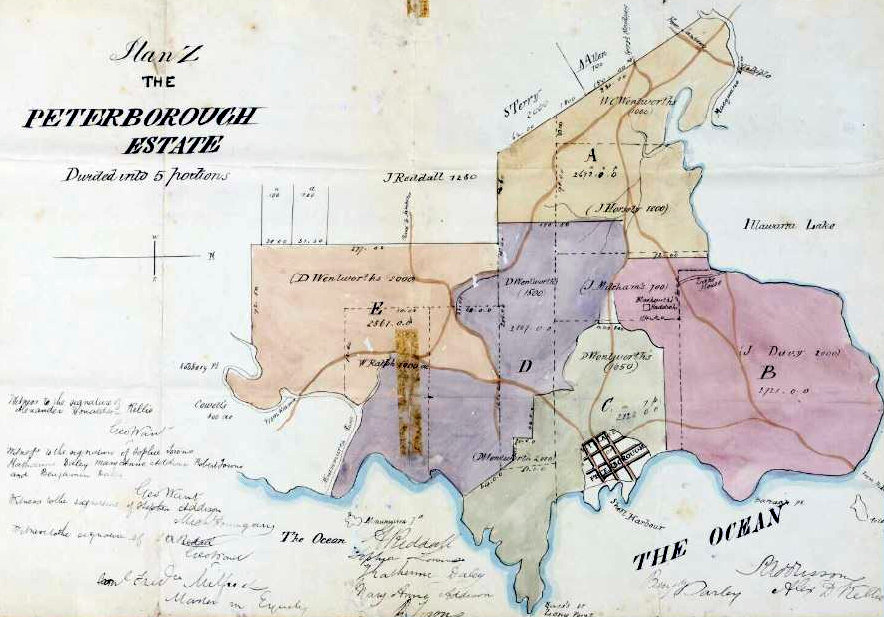
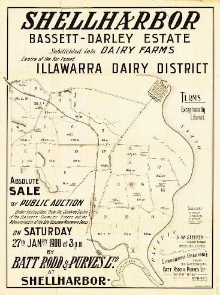

-
The Fenwicks in Australia
The Australian Fenwicks of the family started with our great-great-grandparents, Thomas and Harriet Fenwick, who migrated from Hull in 1844.

Kingston upon Hull 1842, around the time when Thomas and Harriet were married there
From Kingston upon Hull and Drypool
Now better known as 'Hull', Kingston upon Hull was originally an outlying part of the hamlet of Myton, named Wyke, probably derived from the Saxon word Wic meaning dwelling place or refuge. It has been told that in the 13th century, King Edward I and his hunting party followed a hare which "led them along the delightful banks of the River Hull to the hamlet of Wyke and charmed with the scene before him, viewed with delight the advantageous situation of this hitherto neglected and obscure corner. He foresaw it might become subservient both to render the kingdom more secure against foreign invasion, and at the same time greatly to enforce its commerce". Consequently, on the 1st of April, 1299, King Edward granted it a royal charter that renamed the settlement King's town upon Hull. It's interesting to note that the 'Wyke' part was still present in the earlier spelling of the name of Fenwyke.
Map showing location of Naylor's Row in Drypool
Yet to be more precise, according to the marriage record of Thomas and Harriet, both of them were living at No. 6 Naylor's Row in Drypool, which was originally a small hamlet on the other side of the river Hull from the main township. Drypool was first mentioned in the Domesday Book as Dridpole, owned by Drogo de Bevrere, and was notoriously prone to flooding. After having been raised and drained, it became farmland and consisted of the Drypool Chapel and a few houses. In the 1680s, a citadel was built on the south side and used as a garrison until 1849. The population of Drypool in 1821 had reached 1,409 and in 1837 the hamlet and its parish were both absorbed into Kingston upon Hull. From 1837 to 1898, Drypool was part of the registration district of Sculcoates which, in 1937, was itself absorbed into Hull and Holderness districts.
1841 Marriage Record for Thomas Fenwick, Blacksmith, Age 21 and Harriet Downs Age 23, both residing in Drypool.

1841 announcement in the Hull Packet.
"On Saturday the 23rd instant at Holborn Chapel, by the Rev. Ebenezer Morley, Mr Thomas Fenwick, to Miss Harriet Downs, both of this town".
The Holborn Chapel was built in 1830 as an 'Independent Church', presumably independent of main stream Church of England. On their migration records, Thomas and Harriet are described as Episcopalian.
An old representation of the Holborn Chapel situated on the corner of Holborn Street and Holderness Road in Drypool, Hull. The building still stands, almost in its original form, but is now used as an office supplies shop.

1841 Census for Kingston upon Hull showing Thomas and Harriet both aged 20. Their ages were rounded down to a multiple of five, as required for the census.

Shipping News

THE “ROYAL SAXON”—This vessel has made one of the quickest passages of the season, only 99 days having elapsed since her leaving Cork, but her English news does not extend to so late a date as that per the Briton. Her cargo is very trifling, about a hundred hogsheads of beer being the chief article. The emigrants and vessel have a cleanly appearance, and they all seem highly pleased with the treatment received on board; there are 56 single females, 30 unmarried men, 71 children, and 94 married persons.Assisted Passage to Australia
Three years after they were married, Thomas and Harriet migrated to Australia. They left Detport in London on March 1, 1844 and arrived in Port Jackson on June 20 the next year. The records of the ship on which they travelled, the Royal Saxon, reveal they left London with 'Bounty' assisted passage and an agreement to employ them at the other end, namely at Captain Addison's Peterborough Estate in Illawarra. Thomas was to be employed to be a Blacksmith, and 'otherwise make himself generally useful as a farm servant' for the term of 12 calendar months. Captain Addison in return agreed to pay him a yearly salary of 16 pounds as well as to supply him with weekly rations of 12 pounds of beef or mutton, 20 pounds of flour, 3 pounds of sugar and 4 ounces of tea. At the time of her marriage, Harriet had no occupation and the Royal Saxon's records state clearly that only Thomas was employed at Captain Addison's Estate and not Harriet. Hopefully she was a good housewife and could make something out of all that Mutton, Beef, Flour and Tea, every week.The Peterborough Estate around 1847, later to become known as Shellharbour
The Peterborough Estate, Wollongong and Shellharbour
It must have worked out well for the couple on the Peterborough Estate. In the obituary for Harriet published in The Illawarra Mercury, 23 October 1894, it was stated that Thomas had been the manager of Captain Addison's estate for nine years. He conducted all the estate's business, including buying and selling, from the 'Lake House' homestead until such time that the estate passed from Captain Addison, at which time Thomas and Harriet then moved 12 miles north to Wollongong. That would have been in 1853 but after a few years they returned to Shellharbour, as it was then known.
For five years or so, Thomas ran a business in Wollongong with another tradesman, the Wheelwright, Octavius Pollard. Until 1858, the business traded as Fenwick and Pollard, Blacksmiths and Wheelwrights, and was situated in Crown Street, Wollongong, and had its own dwelling-house. The premises were eventually taken over in 1859 and run by William Ahern and Thomas Allen, formerly of Howitt and Sons.
Back in Shellharbour, Thomas took to farming. He selected land at Stoney Range, part of the Bassett-Darley Estate of Shellharbour, one of many estates inherited by Captain Addison's sister in law, Katherine Wentworth. As one of the nine children of D'Arcy Wentworth, Katherine inherited some of her father's huge tracts of land he left behind. At the time of his death, she was only two years old but when she grew up she first married Benjamin Darley and then William Bassett. The colonial government passed a special Private Act of Parliament, the Bassett-Darley Estates Act in 1877, to enable her to go against the conditions of her inheritance and sell the land during her lifetime.The Land Sales at Shellharbour
Thomas Fenwick (1823–1896) and Harriet Downs (1818–1894)
» Thomas Fenwick (1823–1896)
married Harriet Downs (1818–1894) in Hull, Yorkshire, England, 23.01.1841and they had the following children:
Robert Thomas Fenwick 17.07.1845 –
*Shellharbour06.03.1929
†Cooroym. Hellen Rankin in Shellharbour, 05.02.1873 Charlotte Anne Fenwick 18.08.1847 –
*Shellharbour10.07.1934
†Waverleym. Stephen Fryer in Kiama, 25.07.1871 Thomas Fenwick 23.10.1852 –
*Shellharbour11.07.1937
†Bullim. Frances Elizabeth Sharp in Dapto, 26.11.1897 William Fenwick ??.??.1855 –
*Shellharbour24.08.1932
†Randwickm. Mary Wilson in Dapto, 27.12.1877
Robert Thomas Fenwick (1845–1929) and Hellen Rankin (1850–1940)
» Robert Thomas Fenwick (1845–1929)
married Hellen Rankin (1850–1940) in Shellharbour, 05.02.1873and they had the following children:
George Thomas Fenwick 21.11.1873 –
*Shellharbour24.06.1950
†Queenslandm. Mary Maud Walsh in Sydney, 1904 William David Fenwick 26.03.1876 –
*Ulmarra15.12.1932
†Brisbanem. Mary Ellis McAndrew in Wyrallah, 11.03.1908 Ethel Maud Fenwick ??.??.1878 –
*NSW??.??.1966
†NSWm. William Henry Johnston in NSW, 1897 Frederick Robert Fenwick 26.01.1884 –
*Gundurimba04.11.1961
†Caloundram. Jessie Halling McDonald in Alstonville, 28.02.1906 Elizabeth Fenwick 18.01.1886 –
*Lismore09.09.1968
†Tewantinm. Alexander Allan McLean in Ballina, 30.01.1903 Charles Walter Fenwick 07.03.1890 –
*NSW06.06.1973
†Cooroym. Ida Maud Mary Sivyer in Tinbeerwah, 10.09.1913
Frederick Robert Fenwick (1884–1961) and Jessie Halling McDonald (1884–1965)
» Frederick Robert Fenwick (1884–1961)
married Jessie Halling McDonald (1884–1965) in Alstonville, 28.02.1906and they had the following children:
Robert Victor Aubrey Fenwick 24.05.1907 –
*Alstonville16.10.1972
†Southportm. Alice Grace Hirning in Brisbane, 03.01.1930 Flora Isabel Fenwick 21.01.1910 –
*Nambour??.03.1993
†Cooroym. Charles Wilfred Graham in Wynnum South, 19.08.1931 Iris May Fenwick 26.01.1912 –
*Cooroy05.05.1997
†Noosa Headsm. Norman Leslie Parsons in Brisbane, 1947 Frederick Angus Fenwick 23.06.1915 –
*Cooroy19.12.1942
†Sanananda PNGunmarried William Stanley Fenwick 27.03.1918 –
*Cooroy30.12.1942
†Sanananda PNGm. Helen Catherine Hardisty in Hawthorne, 04.10.1940 Allan Murray Fenwick 27.03.1921 –
*Qld25.12.1935
†Beaudesert,aged 14 years Cecil Walter Fenwick 23.01.1923 –
*Cooroy02.10.2004
†Buderimm. Fay Estelle Markwell in 1948 Margaret Joy Fenwick 14.10.1927 –
*Brisbane17.05.2017
†Melbournem. Hubert Benjamin Schneider in Brisbane, 04.03.1950

The Fenwicks' Wherabouts
to be continued ....


{kind=link}
{kind=link}
About Us
We are the descendants of Anglo-Scottish-Prusso-Germanic Australian migrants who settled in the newly formed colonies of New South Wales and Queensland in the nineteenth century. The idea behind these pages is to present the stories and characters of those early settlers along with information about their origins, descendants, families, whereabouts and activities.There are often themes running through their struggles and achievements telling a tale of resourcefulness and hardships in an alien world. The paradox of Australia as an ancient and raw continent and as a 'New World' portrays a collision of ideals and realities yet still shows a continuity in how those people dealt with everyday life.